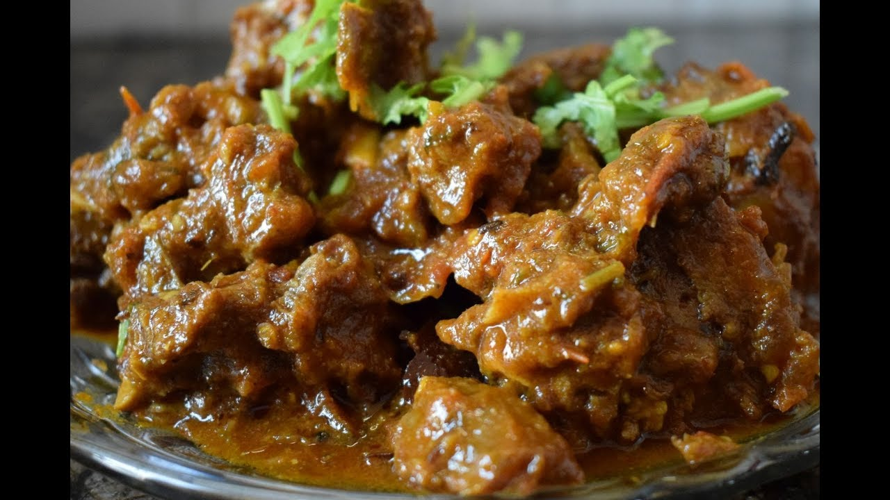

Recipe For Mutton Curry

Mutton curry is a dish that is prepared from goat meat and vegetables. The dish is found in different
variations across all states, countries and regions of South Asia and the Caribbean.
Ingredients
- 1 kg mutton (cut into medium-sized pieces)
- 2 onions (finely chopped)
- 1 tablespoon garlic paste
- 1 tablespoon ginger paste
- 2 tomatoes (chopped)
- 1 tablespoon garlic paste
- 2 green chilies (slit)
- 2 teaspoons cumin powder
- 1 teaspoon coriander powder
- 1 teaspoon turmeric powder
- 1 teaspoon garam masala powder
- 1/4 cup yogurt
- 1 teaspoon red chili powder
- Salt to taste
Instructions:
- Heat oil in a pressure cooker and add the chopped onions. Saute until they turn golden brown.
- Add the ginger and garlic paste, and fry for a minute.
- Add the mutton pieces and fry on high heat for 5-6 minutes, or until they turn brown.
- Add the chopped tomatoes, green chilies, cumin powder, coriander powder, turmeric powder, red chili powder, and salt. Mix well.
- Cook the mixture for another 5-6 minutes or until the tomatoes have become soft and mushy.
- Add the yogurt and mix well. Cook for another 5 minutes.
- Add 1 1/2 to 2 cups of water and pressure cook the mutton for 15-20 minutes, or until it is tender.
- Once done, let the pressure release and then open the lid.
- If the gravy is too thin, cook on high heat for another 5-6 minutes or until it thickens to your desired consistency.
- Finally, sprinkle some garam masala powder and chopped coriander leaves on top for garnishing.
- Serve hot with rice or roti.
Enjoy your delicious Nepali-style mutton curry!
Go To Main Page